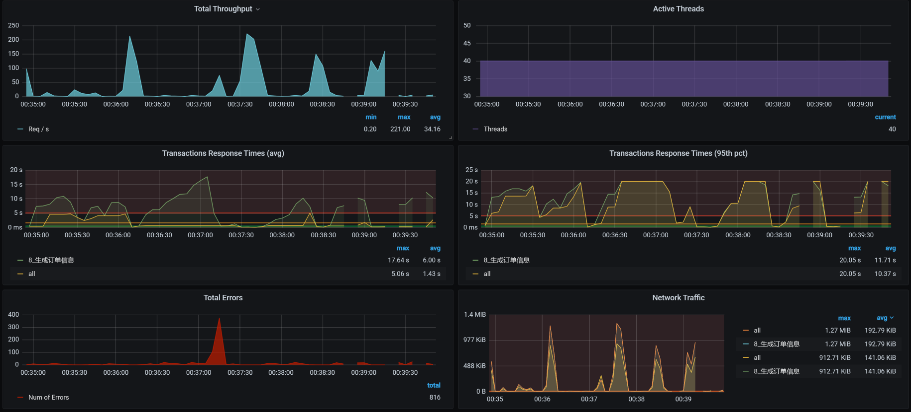
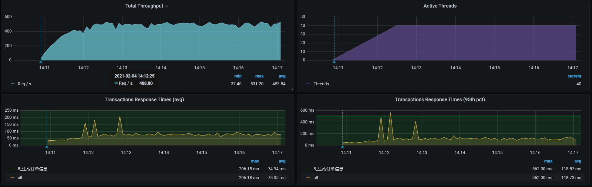
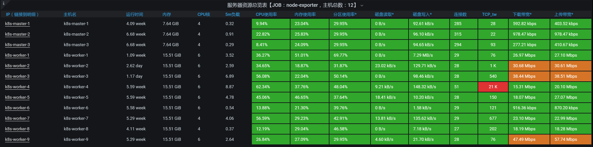
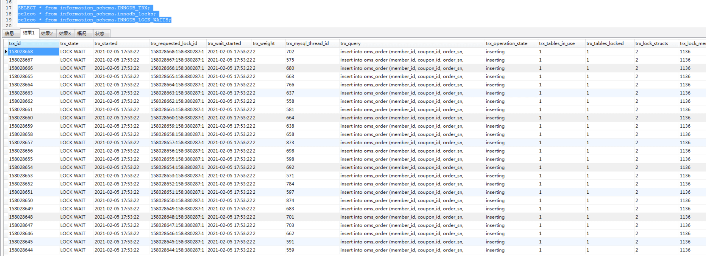
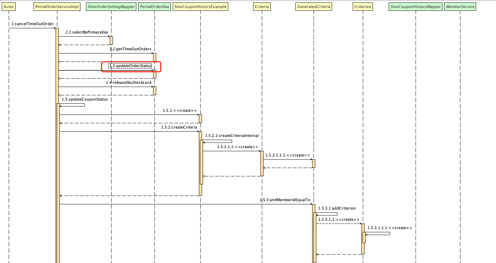
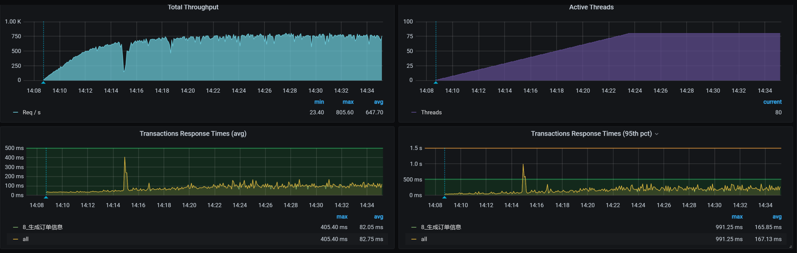

- 00 开篇词 打破四大认知局限，进阶高级性能工程师.md.html
- 01 性能工程：为什么很多性能测试人员无法对性能结果负责？.md.html
- 02 关键概念：性能指标和场景的确定.md.html
- 03 核心分析逻辑：所有的性能分析，靠这七步都能搞定.md.html
- 04 如何构建性能分析决策树和查找瓶颈证据链？.md.html
- 05 性能方案：你的方案是否还停留在形式上？.md.html
- 06 如何抽取出符合真实业务场景的业务模型？.md.html
- 07 性能场景的数据到底应该做成什么样子？.md.html
- 08 并发、在线和TPS到底是什么关系？.md.html
- 09 如何设计全局和定向监控策略？.md.html
- 10 设计基准场景需要注意哪些关键点？.md.html
- 11 打开首页之一：一个案例，带你搞懂基础硬件设施的性能问题.md.html
- 12 打开首页之二：如何平衡利用硬件资源？.md.html
- 13 用户登录：怎么判断线程中的Block原因？.md.html
- 14 用户信息查询：如何解决网络软中断瓶颈问题？.md.html
- 15 查询商品：资源不足有哪些性能表现？.md.html
- 16 商品加入购物车：SQL优化和压力工具中的参数分析.md.html
- 17 查询购物车：为什么铺底参数一定要符合真实业务特性？.md.html
- 18 购物车信息确定订单：为什么动态参数化逻辑非常重要？.md.html
- 19 生成订单信息之一：应用JDBC池优化和内存溢出分析.md.html
- 20 生成订单信息之二：业务逻辑复杂，怎么做性能优化？.md.html
- 21 支付前查询订单列表：如何分析优化一个固定的技术组件？.md.html
- 22 支付订单信息：如何高效解决for循环产生的内存溢出？.md.html
- 23 决定容量场景成败的关键因素有哪些？.md.html
- 24 容量场景之一：索引优化和Kubernetes资源分配不均衡怎么办？.md.html
- 25 容量场景之二：缓存对性能会有什么样的影响？.md.html
- 26 稳定性场景之一：怎样搞定业务积累量产生的瓶颈问题？.md.html
- 27 稳定性场景之二：怎样搞定磁盘不足产生的瓶颈问题？.md.html
- 28 如何确定异常场景的范围和设计逻辑？.md.html
- 29 异常场景：如何模拟不同组件层级的异常？.md.html
- 30 如何确定生产系统配置？.md.html
- 31 怎么写出有价值的性能报告？.md.html
- 我们这个课程的系统是怎么搭建起来的？.md.html
- 结束语 做真正的性能项目.md.html
- 捐赠
20 生成订单信息之二：业务逻辑复杂，怎么做性能优化？
你好，我是高楼。
在上节课中，我们针对生成订单信息这个接口做了三个阶段的分析定位和优化动作，让TPS变得正常了一些。不过，系统资源并没有完全用起来，这个接口显然还有优化的空间。因为高老师说过很多遍，在性能优化的过程中，我们要把资源都用起来。
关于“把资源用起来”这一理论，我希望你能明白的是，我们在性能环境中做优化，把资源用起来是为了看系统的最大容量在哪里。这并不意味着，你可以在生产环境中让硬件使用到这种程度。
对于一个不可控的系统容量来说，资源使用率高，极有可能导致各种问题出现。所以，安全稳妥起见，很多生产环境的资源利用率都是非常低的，倘若用得超过了20%，运维都得半夜惊出一身冷汗。
而我们在性能环境中的测试结果，要想给生产环境配置一个比较明确并且可以借鉴的结论，就必须先去分析生产的业务容量，然后再来确定当生产业务容量达到峰值的时候，相应的硬件资源用到多少比较合理。
不过，在我们的优化环境中，我们可以通过把一个系统用起来，来判断软件的容量能力。所以，我们接着上节课的内容，再进入到第四阶段。你将看到在业务逻辑复杂的情况下，我们该怎么做优化。
闲言少叙，直接开整。
第四阶段
在解决了前面三个不正经的问题之后，我们现在可以正常分析时间消耗到哪去了，只要解决了快慢的问题，我们才能进而解决资源没有用起来的问题。所以，我们先来拆分响应时间，同样，我们也不做全局监控分析，因为…哥嫌累。
拆分响应时间
之前很多次我们都在用APM来拆分响应时间，感觉没什么新意，这次我用日志来拆分一下时间。
- Gateway：
10.100.79.93 - - [04/Feb/2021:00:13:17 +0800] "POST /mall-order/order/generateOrder HTTP/1.1" 200 726 8201 151 ms
10.100.79.93 - - [04/Feb/2021:00:13:17 +0800] "POST /mall-order/order/generateOrder HTTP/1.1" 200 726 8201 147 ms
10.100.79.93 - - [04/Feb/2021:00:13:17 +0800] "POST /mall-order/order/generateOrder HTTP/1.1" 200 726 8201 141 ms
10.100.79.93 - - [04/Feb/2021:00:13:17 +0800] "POST /mall-order/order/generateOrder HTTP/1.1" 200 726 8201 122 ms
10.100.79.93 - - [04/Feb/2021:00:13:17 +0800] "POST /mall-order/order/generateOrder HTTP/1.1" 200 726 8201 125 ms
10.100.79.93 - - [04/Feb/2021:00:13:17 +0800] "POST /mall-order/order/generateOrder HTTP/1.1" 200 726 8201 150 ms
10.100.79.93 - - [04/Feb/2021:00:13:17 +0800] "POST /mall-order/order/generateOrder HTTP/1.1" 200 726 8201 177 ms
- Order：
10.100.79.106 - - [04/Feb/2021:00:13:31 +0800] "POST /order/generateOrder HTTP/1.1" 200 738 "-" "Apache-HttpClient/4.5.12 (Java/1.8.0_261)" 72 ms 72 ms
10.100.79.106 - - [04/Feb/2021:00:13:31 +0800] "POST /order/generateOrder HTTP/1.1" 200 738 "-" "Apache-HttpClient/4.5.12 (Java/1.8.0_261)" 94 ms 93 ms
10.100.79.106 - - [04/Feb/2021:00:13:31 +0800] "POST /order/generateOrder HTTP/1.1" 200 738 "-" "Apache-HttpClient/4.5.12 (Java/1.8.0_261)" 76 ms 76 ms
10.100.79.106 - - [04/Feb/2021:00:13:31 +0800] "POST /order/generateOrder HTTP/1.1" 200 738 "-" "Apache-HttpClient/4.5.12 (Java/1.8.0_261)" 95 ms 95 ms
10.100.79.106 - - [04/Feb/2021:00:13:31 +0800] "POST /order/generateOrder HTTP/1.1" 200 738 "-" "Apache-HttpClient/4.5.12 (Java/1.8.0_261)" 90 ms 90 ms
我们先不用看后面的服务，因为从这个接口往后就直接到数据库了，我们先来看一下应用本身有没有问题。
为了让你看得清楚一点，这里我只截取了部分数据，但并不是说我们只看这些就够了。在项目中的话，你可以通过写脚本或其他的方式自己做响应时间的统计。
从上面的信息可以看到，这个接口的整个响应时间是150ms左右，而在order服务上就消耗了90毫秒。所以，下面我们要分析：为什么在order上会消耗这么久的时间。
定向监控分析
要想知道Order服务的时间消耗，那显然，我们得知道Order应用中的线程都在做什么动作，所以我们先直接来分析Order的栈。
通过Spring Boot Admin，我们可以查看到线程的整体状态：

你看，线程确实比较繁忙。至于这些线程在做什么，我们通过栈的内容可以知道，然后再进一步确定优化的方向。
但是，由于系统资源还没有用到上限，我们得先调整一下Tomcat的线程数，把它加大一些，争取让Order应用把硬件资源用起来。
原值：
max: 20
修改为：
max: 100
我们看一下调整后的结果：

没想到，性能更差了……这乱七八糟的曲线和想像中的优美曲线完全不一致呀！
事实证明，偷懒是绕不过去坑的，我们只有再次查看响应时间消耗到了哪里。
于是，通过用各个服务的日志拆分响应时间，我发现在Member服务上有这样的日志（为了让你看清楚点，我截取了一些时间消耗比较大的日志，请注意一下哦，这是我们改了Order的Tomcat线程池之后的结果）：
10.100.69.248 - - [04/Feb/2021:00:37:15 +0800] "GET /sso/feign/info HTTP/1.1" 200 814 "-" "okhttp/3.14.8" 2348 ms 2348 ms
10.100.69.248 - - [04/Feb/2021:00:37:17 +0800] "GET /sso/feign/info HTTP/1.1" 200 816 "-" "okhttp/3.14.8" 4155 ms 4155 ms
10.100.69.248 - - [04/Feb/2021:00:37:17 +0800] "GET /sso/feign/info HTTP/1.1" 200 817 "-" "okhttp/3.14.8" 4968 ms 1813 ms
10.100.69.248 - - [04/Feb/2021:00:37:15 +0800] "GET /sso/feign/info HTTP/1.1" 200 810 "-" "okhttp/3.14.8" 2333 ms 2333 ms
10.100.69.248 - - [04/Feb/2021:00:37:17 +0800] "GET /sso/feign/info HTTP/1.1" 200 815 "-" "okhttp/3.14.8" 5206 ms 4970 ms
10.100.69.248 - - [04/Feb/2021:00:37:20 +0800] "GET /sso/feign/info HTTP/1.1" 200 818 "-" "okhttp/3.14.8" 6362 ms 6362 ms
10.100.69.248 - - [04/Feb/2021:00:37:20 +0800] "GET /sso/feign/info HTTP/1.1" 200 818 "-" "okhttp/3.14.8" 6710 ms 6710 ms
10.100.69.248 - - [04/Feb/2021:00:37:20 +0800] "GET /sso/feign/info HTTP/1.1" 200 817 "-" "okhttp/3.14.8" 6696 ms 6587 ms
10.100.69.248 - - [04/Feb/2021:00:37:21 +0800] "GET /sso/feign/info HTTP/1.1" 200 813 "-" "okhttp/3.14.8" 7987 ms 7976 ms
10.100.69.248 - - [04/Feb/2021:00:37:22 +0800] "GET /sso/feign/info HTTP/1.1" 200 814 "-" "okhttp/3.14.8" 8784 ms 8784 ms
10.100.69.248 - - [04/Feb/2021:00:37:22 +0800] "GET /sso/feign/info HTTP/1.1" 200 817 "-" "okhttp/3.14.8" 9100 ms 8764 ms
10.100.69.248 - - [04/Feb/2021:00:37:22 +0800] "GET /sso/feign/info HTTP/1.1" 200 834 "-" "okhttp/3.14.8" 9126 ms 9013 ms
10.100.69.248 - - [04/Feb/2021:00:37:22 +0800] "GET /sso/feign/info HTTP/1.1" 200 817 "-" "okhttp/3.14.8" 9058 ms 9058 ms
10.100.69.248 - - [04/Feb/2021:00:37:23 +0800] "GET /sso/feign/info HTTP/1.1" 200 820 "-" "okhttp/3.14.8" 9056 ms 9056 ms
显然，这个Member服务的响应时间太长了。而在生成订单信息这个接口中，也确实调用了Member服务，因为要使用Token嘛。既然是Order的Tomcat线程池加大了，导致Member服务响应如此之慢，那我们就有理由作出判断：Order之所以消耗时间长，是因为Member服务不能提供Order请求时的快速响应。通俗点讲，就是Member的性能差。
要想分析Member性能为什么差，我们其实可以直接到Member上打印栈信息来看看，这是高老师有时候偷懒的做法。
而我们一直在讲，完整的分析逻辑应该是先看全局监控数据，再看定向监控数据。所以，高老师在这里，勤快一点。我们通过全局监控数据来看看整体的资源消耗：

worker-8的CPU资源居然用到了这么高！这说明我们在前面增加Order的Tomcat线程数是有价值的。现在，瓶颈点到了另一个地方，也就是我们的Member服务。
既然worker-8的资源使用率高，那我们就来看看它上面有什么Pod，不难看出Member就在worker8上：
[root@k8s-master-2 ~]# kubectl get pods -o wide | grep k8s-worker-8
elasticsearch-client-0 1/1 Running 0 38h 10.100.231.233 k8s-worker-8 <none> <none>
monitor-mall-monitor-d8bb58fcb-kfbcj 1/1 Running 0 23d 10.100.231.242 k8s-worker-8 <none> <none>
skywalking-oap-855f96b777-5nxll 1/1 Running 6 37h 10.100.231.235 k8s-worker-8 <none> <none>
skywalking-oap-855f96b777-6b7jd 1/1 Running 5 37h 10.100.231.234 k8s-worker-8 <none> <none>
svc-mall-admin-75ff7dcc9b-8gtr5 1/1 Running 0 17d 10.100.231.208 k8s-worker-8 <none> <none>
svc-mall-demo-5584dbdc96-fskg9 1/1 Running 0 17d 10.100.231.207 k8s-worker-8 <none> <none>
svc-mall-member-5fc984b57c-bk2fd 1/1 Running 0 12d 10.100.231.231 k8s-worker-8 <none> <none>
[root@k8s-master-2 ~]#
同时，我们还能发现，这个节点上有不少服务，而这些服务都是比较吃CPU的，并且在压力过程中，还出现了sy cpu消耗很高的情况，我截两个瞬间的数据给你看看，一个是sy cpu高的情况，一个是us cpu高的情况，具体如下所示：
- sys cpu高的情况
[root@k8s-worker-8 ~]# top
top - 00:38:51 up 28 days, 4:27, 3 users, load average: 78.07, 62.23, 39.14
Tasks: 275 total, 17 running, 257 sleeping, 1 stopped, 0 zombie
%Cpu0 : 4.2 us, 95.4 sy, 0.0 ni, 0.0 id, 0.0 wa, 0.0 hi, 0.0 si, 0.4 st
%Cpu1 : 1.8 us, 98.2 sy, 0.0 ni, 0.0 id, 0.0 wa, 0.0 hi, 0.0 si, 0.0 st
%Cpu2 : 2.1 us, 97.9 sy, 0.0 ni, 0.0 id, 0.0 wa, 0.0 hi, 0.0 si, 0.0 st
%Cpu3 : 1.0 us, 99.0 sy, 0.0 ni, 0.0 id, 0.0 wa, 0.0 hi, 0.0 si, 0.0 st
KiB Mem : 16266296 total, 1819300 free, 7642004 used, 6804992 buff/cache
KiB Swap: 0 total, 0 free, 0 used. 8086580 avail Mem
PID USER PR NI VIRT RES SHR S %CPU %MEM TIME+ COMMAND
12902 root 20 0 1410452 32280 17744 S 48.1 0.2 751:39.59 calico-node -felix
9 root 20 0 0 0 0 R 34.8 0.0 131:14.01 [rcu_sched]
3668 techstar 20 0 4816688 1.3g 23056 S 33.9 8.5 111:17.12 /usr/share/elasticsearch/jdk/bin/java -Xshare:auto -Des.networkaddress.cache.ttl=60 -Des.networkaddress+
26105 root 20 0 119604 6344 2704 R 25.8 0.0 0:02.36 runc --root /var/run/docker/runtime-runc/moby --log /run/containerd/io.containerd.runtime.v1.linux/moby+
26163 root 20 0 19368 880 636 R 25.2 0.0 0:00.95 iptables-legacy-save -t nat
26150 root 20 0 18740 3136 1684 R 21.6 0.0 0:01.18 runc init
26086 root 20 0 18744 5756 2376 R 20.3 0.0 0:03.10 runc --root /var/run/docker/runtime-runc/moby --log /run/containerd/io.containerd.runtime.v1.linux/moby+
410 root 20 0 0 0 0 S 19.4 0.0 42:42.56 [xfsaild/dm-1]
14 root 20 0 0 0 0 S 14.8 0.0 54:28.76 [ksoftirqd/1]
6 root 20 0 0 0 0 S 14.2 0.0 50:58.94 [ksoftirqd/0]
26158 root 20 0 18740 1548 936 R 14.2 0.0 0:00.90 runc --version
31715 nfsnobo+ 20 0 129972 19856 9564 S 11.3 0.1 12:41.98 ./kube-rbac-proxy --logtostderr --secure-listen-address=[172.16.106.56]:9100 --tls-cipher-suites=TLS_EC+
10296 root 20 0 3402116 113200 39320 S 10.3 0.7 2936:50 /usr/bin/kubelet --bootstrap-kubeconfig=/etc/kubernetes/bootstrap-kubelet.conf --kubeconfig=/etc/kubern+
22 root rt 0 0 0 0 S 8.7 0.0 3:18.08 [watchdog/3]
26162 root 20 0 139592 2792 2508 R 8.4 0.0 0:00.39 /opt/cni/bin/calico
6843 root 20 0 965824 110244 30364 S 7.7 0.7 1544:20 /usr/bin/dockerd -H fd:// --containerd=/run/containerd/containerd.sock
24 root 20 0 0 0 0 S 7.4 0.0 49:03.89 [ksoftirqd/3]
3636 techstar 20 0 4368 364 280 S 6.8 0.0 0:12.19 /tini -- /usr/local/bin/docker-entrypoint.sh eswrapper
26159 root 20 0 18740 760 552 R 6.5 0.0 0:00.28 runc --version
1755 root 20 0 411108 5836 4416 S 4.8 0.0 35:39.97 /usr/libexec/packagekitd
- us cpu高的情况
[root@k8s-worker-8 ~]# top
top - 00:43:01 up 28 days, 4:31, 3 users, load average: 72.51, 68.20, 47.01
Tasks: 263 total, 2 running, 260 sleeping, 1 stopped, 0 zombie
%Cpu0 : 77.2 us, 15.7 sy, 0.0 ni, 2.2 id, 0.0 wa, 0.0 hi, 4.8 si, 0.0 st
%Cpu1 : 77.0 us, 15.7 sy, 0.0 ni, 2.3 id, 0.0 wa, 0.0 hi, 5.0 si, 0.0 st
%Cpu2 : 70.3 us, 20.9 sy, 0.0 ni, 2.9 id, 0.0 wa, 0.0 hi, 5.9 si, 0.0 st
%Cpu3 : 76.6 us, 12.2 sy, 0.0 ni, 5.1 id, 0.0 wa, 0.0 hi, 6.1 si, 0.0 st
KiB Mem : 16266296 total, 1996620 free, 7426512 used, 6843164 buff/cache
KiB Swap: 0 total, 0 free, 0 used. 8302092 avail Mem
PID USER PR NI VIRT RES SHR S %CPU %MEM TIME+ COMMAND
20072 root 20 0 7944892 689352 15924 S 137.1 4.2 3127:04 java -Dapp.id=svc-mall-member -javaagent:/opt/skywalking/agent/skywalking-agent.jar -Dskywalking.agent.+
29493 root 20 0 3532496 248960 17408 S 98.3 1.5 0:06.70 java -XX:+UnlockExperimentalVMOptions -XX:+UseCGroupMemoryLimitForHeap -Dmode=no-init -Xmx2g -Xms2g -cl+
28697 root 20 0 3711520 1.0g 18760 S 61.6 6.7 124:41.08 java -XX:+UnlockExperimentalVMOptions -XX:+UseCGroupMemoryLimitForHeap -Dmode=no-init -Xmx2g -Xms2g -cl+
25885 root 20 0 3716560 1.2g 18908 S 59.3 7.6 183:12.97 java -XX:+UnlockExperimentalVMOptions -XX:+UseCGroupMemoryLimitForHeap -Dmode=no-init -Xmx2g -Xms2g -cl+
6843 root 20 0 965824 109568 30364 S 7.6 0.7 1544:49 /usr/bin/dockerd -H fd:// --containerd=/run/containerd/containerd.sock
3668 techstar 20 0 4816688 1.3g 23056 S 6.6 8.5 111:58.56 /usr/share/elasticsearch/jdk/bin/java -Xshare:auto -Des.networkaddress.cache.ttl=60 -Des.networkaddress+
10296 root 20 0 3402372 111692 39320 S 6.6 0.7 2937:43 /usr/bin/kubelet --bootstrap-kubeconfig=/etc/kubernetes/bootstrap-kubelet.conf --kubeconfig=/etc/kubern+
18 root rt 0 0 0 0 S 5.0 0.0 5:57.54 [migration/2]
6 root 20 0 0 0 0 S 2.6 0.0 51:21.52 [ksoftirqd/0]
410 root 20 0 0 0 0 D 2.6 0.0 43:08.23 [xfsaild/dm-1]
28310 root 20 0 7807048 565740 15924 S 2.6 3.5 1036:53 java -Dapp.id=svc-mall-admin -javaagent:/opt/skywalking/agent/skywalking-agent.jar -Dskywalking.agent.s+
29741 root 20 0 7749608 540376 15848 S 2.3 3.3 304:41.47 java -Dapp.id=svc-mall-monitor -javaagent:/opt/skywalking/agent/skywalking-agent.jar -Dskywalking.agent+
12902 root 20 0 1410452 30368 17744 S 2.0 0.2 752:30.32 calico-node -felix
16712 root 0 -20 0 0 0 S 2.0 0.0 1:56.16 [kworker/2:0H]
6381 root 20 0 7782400 491476 15928 S 1.7 3.0 441:08.96 java -Dapp.id=svc-mall-demo -
从sy cpu高的top数据来看，这个节点显然在不断地调度系统资源，通过top中的rcu_sched/softirq等进程就可以知道，这种情况显然是因为Kubernetes在这个节点上过多地安排了任务。所以，我先把Member服务移到另一个worker上，然后看到TPS如下：

你看，TPS增加到400多了，也就是说我们的方向是对的。
那为什么我们之前修改Order服务的Tomcat线程数没有看到效果呢？这是因为压力已经到了Member服务上，这让Member服务所在的worker节点资源使用率增加，导致Member服务无法正常响应请求。因此，整个TPS看起来没有什么优化效果。现在，我们移走了Member服务，看到效果明显增加，这说明我们的方向还在正确的道路上。
我们再回来看一下整体的资源监控：

现在，没有一个worker的资源用满或者接近用满，完全不符合我们“把资源都用起来”的目标，这显然是不可接受的。
在长时间的压力中，我们发现资源怎么也用不上去。而且在上节课第三阶段的最后一个图中，你也能清楚地看到这一点。
到这里为止，我们查看了一次次的性能分析决策树，也调整了一些参数，比如Spring Boot中的Tomcat连接池、JDBC池、Jedis池、MQ池等，调整之后TPS似乎有增加的趋势，但是非常不明显。所以，我们只能开始新一轮的定位。
第五阶段
定位时间消耗
在上一个阶段的分析中，我们用日志拆分了响应时间，是想让你看到我们用不同的手段都可以把响应时间拆出来。这也是我一直强调的：你不要在意用什么手段，而要在意你想要的是什么。
在这一阶段中，我们再换一个思路：跟踪方法的执行过程来判断时间消耗。我想让你看到：在优化过程中，唯有思路不变，手段任你选择。
这个方法和我们用日志拆分时间的逻辑其实是一样的。我们可以直接用Arthas来定位方法的时间消耗。请你记住，除了Arthas之外，还有很多其他工具也是可以的，比如JvisualVM/JMC/BTrace等。
我们已经知道接口方法是com.dunshan.mall.order.service.impl.PortalOrderServiceImpl中的generateOrder，所以，我们直接trace（跟踪）它就可以了。
你要注意，在这一步中，我们需要反复trace多次，这是为了保证判断方向的正确性。不得不承认，这是一种耗时又枯燥的工作，有一种数羊睡觉的感觉。不过，有的人能数睡着，有的人却是越数越兴奋。
现在，我们来看一下反复trace后的结果。由于跟踪的栈实在太长了，我把多次跟踪的内容做了简化，其中重要的部分如下所示：
+---[91.314104ms] com.dunshan.mall.order.feign.MemberService:getCurrentMember() #150
....................
+---[189.777528ms] com.dunshan.mall.order.feign.CartItemService:listPromotionnew() #154
....................
+---[47.300765ms] com.dunshan.mall.order.service.impl.PortalOrderServiceImpl:sendDelayMessageCancelOrder() #316
为什么说这几个方法重要呢？这里我要说明一下，对于跟踪的内容，我们主要判断的是：消耗时间的方法是不是固定的。如果时间不是消耗在了固定的方法上，那就有些麻烦了，因为这说明不是方法本身的问题，而是其他的资源影响了方法的执行时间；如果时间一直消耗在了固定的方法上，就比较容易了，我们只要接着去跟踪这个方法就好了。
而我反复跟踪了多次之后，总是发现上面几个方法都比较消耗时间。既然已经知道了方法的时间消耗，那全局监控已经救不了我们了，只有在定向监控中来分析了。
定向监控分析
我先说明一下，根据我们的分析思路，我在定向监控分析之前，反复分析了全局监控计数器，没觉得有什么资源使用上的问题。并且从压力工具到数据库，我也没发现有什么阻塞点，整条大路都很宽敞。
但是，上面我们也确实看到了响应时间消耗在了几个具体的方法上，并且这几个方法并不是一直都消耗这么长的时间，而是有快有慢。
经过反复确认后，我觉得有必要来看一下业务逻辑了。因为对于一个复杂的业务来说，如果业务代码逻辑太长，那我们不管怎么优化，都不会有什么效果，最后只能按照扩容的思路来加机器了。
不过，在我的逻辑中，即便是加机器，我们也要给出加机器的逻辑。如果业务可优化，那我们更要尽力一试。因为从成本上来说，优化代码是一个更优的选择。
在这里，我多说几句闲话。我看到过很多企业连一些简单的优化都没有做，就从寻找心理安全感的角度去增加机器，结果耗费了大量的成本，这是非常不理智的。从技术的角度来说，花不多的时间成本就可以节省大量的资源成本，这显然是很划算的。可是，受一些社会不良思维的误导，有些企业就觉得只要能通过加机器解决的问题，都不是啥大问题。
对于这种思路，我们就得放到成本上来算一算了。大部分打工人可能会觉得，反正用的又不是自己的钱，管老板花多少钱加机器干嘛？没意义。但是，从节能减排的全球大局观来看，一个该做的优化没有做，不仅浪费公司的成本，还一点儿都不环保！呃…好像扯的有点远了。
我们回到正题，既然我们想优化业务，就得先知道业务的调用逻辑是个啥样子。所以我们打开idea，找到generateOrder方法，然后把sequence diagram（idea的一个插件）打开，就看到了这样一张很长的业务逻辑图：

如果你看不懂这张图，也没有关系。我在这里给你大致描述一下这张图里有什么东西：
- 获取用户名；
- 获取购物车列表；
- 获取促销活动信息；
- 判断库存；
- 判断优惠券；
- 判断积分；
- 计算金额；
- 转订单并插库；
- 获取地址信息；
- 计算赠送积分和成长值
- 插入订单表；
- 更新优惠券状态；
- 扣积分；
- 删除购物车商品；
- 发送取消订单消息；
- 返回结果；
是不是有种很复杂的感觉？通过我大概列出来的这些内容，你就能知道下订单这个动作有多长了。对这样的复杂接口，如果业务逻辑要求必须是这样的，那我们在接口上就没有什么优化空间了。在前面，我们已经把TPS优化到了400多，在这样的硬件机器上，也基本上就这样了。
在这节课中，我们不是要去设计一个下订单的业务逻辑，因为每个企业的下订单逻辑，都会有不同的业务限制。做为性能工程师，我们没有对业务逻辑的设计说改就改的权利，因为修改业务逻辑需要所有的相关人员一起商讨确定。不过，我们可以通过分析的结果给出优化的建议。
在这里，我把优惠券、积分、发送延时取消订单信息的步骤都从下订单的步骤中删掉。有人可能会问这样改合适吗？我强调一下，不是我要这样改业务逻辑，而是想看看这样改了之后，TPS有没有增加。如果增加了，就说明我们的方向是对的，也就是说，这个业务逻辑需要再和各方商量一下，重新设计。
我们来看修改之后的TPS图：

可以看到，这样的修改确实有效果，那我们后续的优化建议就比较清晰了。如果你在项目中遇到这样的接口，优化建议就可以这样来提：
- 分库分表；
- 利用缓存；
- 异步处理非关键步骤；
- 大接口拆成小接口。
但是，建议终归是建议，通常在一个企业中，对于这样的接口，技术团队会根据具体的业务逻辑做长时间的技术分析，来判断如何实现。如果确实没办法在技术上做优化，那就只能上最后一招：扩容！这个扩容就不再是扩某一段了，而是一整条链路上涉及到的服务。
还有一点，在一个业务链路中，每个企业通常都是根据发展的速度做相应的技术沉淀。如果技术团队太追潮流了，学习成本大，不见得是好事；如果太陈旧了，维护的成本大，也不见得是好事。因此，我们只有根据实际的业务发展不断地演进业务流程和技术实现，才是正道。
我们优化到这里，看似就可以结束收工了，但是并没有，因为天不随人愿的定律从来都没有被打破过，我们只得来到第六个阶段。
第六阶段
定位TPS会降下来的问题
具体是什么原因呢？我在接着压的时候，又出现了这样的问题：

你看，TPS掉呀掉的，心都碎了……虽说在每个项目的优化过程中，都会出现各种意外的事情，但是，这个接口的意外也太多了点。没办法，我们接着查吧。
仍然是按照高老师强调的性能分析决策树（如果你不清楚，可以再看看第4讲），我们一个个计数器看过去，最后在mysqlreport中看到了下面这些数据：
__ InnoDB Lock _________________________________________________________
Waits 889 0.1/s
Current 77
Time acquiring
Total 36683515 ms
Average 41263 ms
Max 51977 ms
显然当前的锁有点多，并且这锁的时间还挺长。要想查锁，就得先知道当前正在运行的是什么样的事务，所以我们就去查一下innodb_trx表，因为MySQL在这个表中会记录所有正在执行的事务。在数据库中，我们发现了大量的lock_wait（锁等待）：

既然有锁等待，那我们自然要查一下锁关系，看看是什么在等待锁。在看具体的锁关系之前，我们也来查看一下应用日志。
为什么要看应用日志呢？因为对于数据库来说，锁是为了保护数据的一致性，而产生锁的事务自然是从应用中来的。按照这样的逻辑，我们在MySQL中和在应用中看到的事务SQL，应该是对应的。而现在我们只看到了MySQL中的锁，还不知道在应用中会是什么样子，所以，我们要看一下应用的日志。
这里温馨提醒一句：**在这个时候，*我们*还*需要注意，不要用*重压力工具中的某些具有唯一性的参数化数据**。因为当参数化数据用重了，在数据库中执行update语句也照样会出现锁。
在查看了应用日志之后，我们看到如下信息：
[2021-02-06 00:46:59.059] [org.apache.juli.logging.DirectJDKLog] [http-nio-8086-exec-72] [175] [ERROR] Servlet.service() for servlet [dispatcherServlet] in context with path [] threw exception [Request processing failed; nested exception is org.springframework.dao.CannotAcquireLockException:
### Error updating database. Cause: com.mysql.cj.jdbc.exceptions.MySQLTransactionRollbackException: Lock wait timeout exceeded; try restarting transaction
### The error may involve com.dunshan.mall.mapper.OmsOrderMapper.insert-Inline
### The error occurred while setting parameters
### SQL: insert into oms_order (member_id, coupon_id, order_sn, create_time, member_username, total_amount, pay_amount, freight_amount, promotion_amount, integration_amount, coupon_amount, discount_amount, pay_type, source_type, status, order_type, delivery_company, delivery_sn, auto_confirm_day, integration, growth, promotion_info, bill_type, bill_header, bill_content, bill_receiver_phone, bill_receiver_email, receiver_name, receiver_phone, receiver_post_code, receiver_province, receiver_city, receiver_region, receiver_detail_address, note, confirm_status, delete_status, use_integration, payment_time, delivery_time, receive_time, comment_time, modify_time) values (?, ?, ?, ?, ?, ?, ?, ?, ?, ?, ?, ?, ?, ?, ?, ?, ?, ?, ?, ?, ?, ?, ?, ?, ?, ?, ?, ?, ?, ?, ?, ?, ?, ?, ?, ?, ?, ?, ?, ?, ?, ?, ?)
### Cause: com.mysql.cj.jdbc.exceptions.MySQLTransactionRollbackException: Lock wait timeout exceeded; try restarting transaction
; Lock wait timeout exceeded; try restarting transaction; nested exception is com.mysql.cj.jdbc.exceptions.MySQLTransactionRollbackException: Lock wait timeout exceeded; try restarting transaction] with root cause
com.mysql.cj.jdbc.exceptions.MySQLTransactionRollbackException: Lock wait timeout exceeded; try restarting transaction
你看，连一个insert都会报lock_wait，这显然是出现表级锁了。因为insert本身是不会出现表级锁的，所以应该还有其他的信息。我们接着看日志，果然，又看到如下信息：
[2021-02-06 01:00:51.051] [org.springframework.scheduling.support.TaskUtils$LoggingErrorHandler] [scheduling-1] [95] [ERROR] Unexpected error occurred in scheduled task
org.springframework.dao.CannotAcquireLockException:
### Error updating database. Cause: com.mysql.cj.jdbc.exceptions.MySQLTransactionRollbackException: Lock wait timeout exceeded; try restarting transaction
### The error may involve defaultParameterMap
### The error occurred while setting parameters
### SQL: update oms_order set status=? where id in ( ? )
### Cause: com.mysql.cj.jdbc.exceptions.MySQLTransactionRollbackException: Lock wait timeout exceeded; try restarting transaction
; Lock wait timeout exceeded; try restarting transaction; nested exception is com.mysql.cj.jdbc.exceptions.MySQLTransactionRollbackException: Lock wait timeout exceeded; try restarting transaction
你看，其中有update语句，这样一来，逻辑就成立了：我们知道，update是会锁数据的，但是，MySQL用的是InnoDB的引擎。如果update的条件是精确查找，那就应该不会出现表级锁。
可是，如果update的范围比较大，就会有问题了，因为这会导致insert语句被阻塞。过一会儿之后，你就会看到如下内容：

我们看到，所有的insert都在LOCK WAIT状态了，这就是表级锁对insert产生的影响。如果你再查一下锁和锁等待的话，就会看到如下信息：

不难看出，lock_mode这一列的值全是X，意思是X锁。我们知道，排他锁（X锁），又叫写锁。图中的锁类型（lock_type）全是RECORD，锁住的是索引，并且索引是GEN_CLUST_INDEX，说明这个锁等待是因为innodb创建的隐藏的聚集索引。
当一个SQL没有走任何索引时，就会在每一条聚集索引后面加X锁，这和表级锁的现象是一样的，只是在原理上有所不同而已。为了方便描述，我们仍然用“表级锁”来描述。
要查锁，就得看看是谁持有锁。经过仔细查看上面的INNODB_LOCK_WAIT后，我们确定了这个锁对应的事务ID是157710723，它对应的SQL是：
update oms_order set status=4 where id in ( 0 );
我们去代码中查一下这段update代码：
/**
* 批量修改订单状态
*/
int updateOrderStatus(@Param("ids") List<Long> ids,@Param("status") Integer status);
原来这是一个批量任务的调用，具体逻辑如下：

这个批量任务的问题在于，在一个订单表中做批量更新的操作，并且这个批量查询的内容还挺多。因为上面的ID是0，表示订单是未支付的，而未支付的订单在这个表中有很多，所以，在更新时做大范围的查找，会进而导致表级锁的出现。
这个批量任务的设计明显有问题。你想想，要在订单表中做更新这么大的动作，那也应该是做精准更新，而不是范围更新。其实对于订单的更新逻辑，我们可以选择其他的实现方式。
锁的原因找到了，我们现在要把范围更新改为非常精准的更新，让它不产生表级锁。修改之后，重新执行场景的结果如下：

从优化效果来看，TPS已经达到700以上了。对这样一个复杂的接口来说，这已经非常不错了。
其实，这个订单业务还有很多的优化空间，比如说：
- 异步生成订单序列号，然后存放到Redis里，随用随取。
- 批量业务需要重新设计。
- 读写分离之后，对业务代码也做相应更新。
- ……
由于订单逻辑是电商中的非常复杂的一步，我就不再展开说了，因为再说就超出了性能的范畴。
总结
在这个接口中，我们遇到了好几个问题。先抛开问题和复杂度不说，我想表达的是，在性能优化过程中，问题是像洋葱一样一个个剥开的。虽然有可能一个优化动作就可以产生很好的效果，但是我们一定不要着急，要慢慢分析一个个问题。
回顾一下我们对这个接口的所有分析优化过程。在第一阶段中，我们修改线程池产生了效果，但也出现了新问题；在第二阶段中，我们解决了查询大量数据导致内存被耗光的问题；在第三阶段，我们解决了索引的问题；在第四阶段中，我们重新调配了资源，让系统的调度更加合理。
在第五阶段中，我们定位了方法的时间消耗问题，这一步你要注意，一定要在分析了业务逻辑之后再做相应的优化，不要因一味追求性能的优化效果而纠结。
在第六阶段中，我们定位了批量任务设计不合理的问题。在正经的批量任务中，批量产生的表级锁和insert的功能点，一定要分开。
总之，在分析的过程中，我们不要界定问题的边界，遇到什么问题就解决什么问题，不急不燥，不卑不亢。
课后作业
最后，请你思考两个问题：
- 如何快速定位内存被消耗光的情况？
- 如何快速定位业务逻辑导致的TPS上不去、资源也用不上的情况？
记得在留言区和我讨论、交流你的想法，每一次思考都会让你更进一步。
如果你读完这篇文章有所收获，也欢迎你分享给你的朋友，共同学习进步。我们下一讲再见！
© 2019 - 2023 Liangliang Lee. Powered by gin and hexo-theme-book.